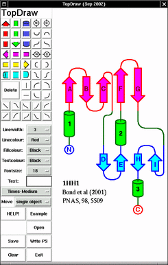

TopDraw - Version: Sep 2002
(c) 2000, 2001 Charlie Bond C.S.Bond@dundee.ac.uk
TopDraw is a sketchpad for drawing topology cartoons of proteins written in Tcl/Tk (Tcl/Tk is installed by default with most unix variants and is available for most if not all platforms). It does not calculate topology from a PDB file, but merely allows you to sketch a topology derived from another source (my favourite is HERA - if you run PROMOTIF on your protein, you get a .her file which is a postscript file containing the HERA topology.)
TopDraw is distributed under the GNU General Public License terms.
Features
Rationale
Usage
Output
Limitations
References
Author
Screen Shot (click for larger version):

I wrote it because there was a lack of such software - I spent hours creating a topology diagram with a drawing program for a publication and got 4 or 5 emails subsequently asking which software I used. While Tops/XTops provides a route to automatic cartoon generation from a PDB file, the cartoon style of XTops is not a style I like.
If you have any good ideas for improvements, or spot any bugs, let me know and I will try to implement/fix them. If you have any customisations which could be included, let me know.
TopDraw requires Tcl/Tk version 8.0 or better.
Unix: From the command-line type topdraw
Windows: click on the TopDraw.tcl icon
Select an item type by clicking on it. (Colours are determined by the selection boxes, not the colour on the icon!)
Select fillcolour, linecolour and linewidth, then place the item on the canvas by clicking at the correct position.
Move it by dragging it with middle mouse button.
Delete it by clicking 'Delete' then clicking the unwanted item.
To place text, set the fontsize and colour and type the text in the box, followed by Enter/Return. Then you can place/move/delete it as described above.
If you are going to scale the final image to a new size for publication, make sure that you use a large-enough font size. A final size of 8pt is the smallest usually accepted, so if you will need to scale the figure down by a factor of two, then select font size 16.
HINT: If in desperation you have finished a complex drawing and
subsequently want to change the font size or some colours, this can be
achieved by editing the saved file in a text editor and then
re-reading it into TopDraw. You will see lines like this:
helixtop Green 375 500 3 DarkGreen
line01 Green 375 550 3 DarkGreen
text Blue 275 417 18 Helvetica-Bold D
For text objects, the fields are "Object_type fill_colour x-coord
y-coord font_size font text".
For other objects, the fields are "Object_type fill_colour x-coord
y-coord line_width line_colour".
Objects can't be pushed underneath previously drawn objects. Place background objects first.
If you wish to move everything (e.g. you started too close to the edge), activate the \"Move all objects\" button.
Keep your drawing to the lower left side of the canvas to make further processing of postscript files easier.
The PostScript output is written using a native Tcl/Tk command. This is fully conforming PS. It should be readable by any postscript viewer (ghostscript, ghostview, ImageMagick, gimp are all freely available). If your sketch is on the far right of the canvas, it may appear 'off the page' with some viewers.
To prepare a figure for publication, I save as Postscript (e.g. test.ps), run ps2epsi from the ghostscript package ('ps2epsi test.ps') to produce encapsulated postscript (test.epsi) which is accepted by most publishers. EPS files can be scaled to any size with no loss of resolution. Alternatively, this can be converted to any other image type with ImageMagick ('convert test.epsi test.tif').
Tcl/Tk for Windows (I have V8.3) seems to leave some ovals opaque. This only affects the cursor, not the finished image, so I shall wait for TK to be fixed rather than work around it.
{kind=link}